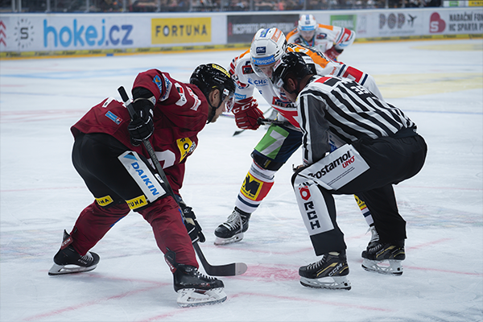
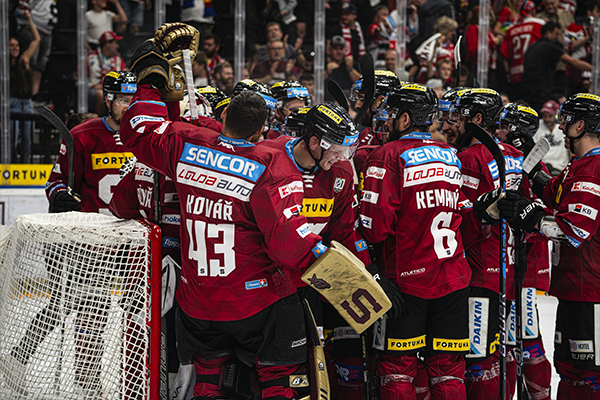

HC Sparta Praha vs HC Dynamo Pardubice 02 arena - Praha ▮▪
We have another article today, this time about photography. Shooting sports is always a big challenge, but hockey is much faster compared to football. Choosing the right gear is very important, as well as having at least some understanding of how this beautiful sport “works.” I can’t imagine going to shoot something like American football because I don’t know all the rules 100%, and I wouldn’t always know what exactly happened or what to expect in the next few seconds.
I have been watching and loving hockey for many years. I know the rules from A to Z, and I can say that my ability to anticipate the game is quite good. I regularly follow the NHL, and it’s also one of my photographic goals to get there professionally. Combining that with everything else I do is not easy, but I set a goal for myself this year to focus more on photography. At the moment, I spend a lot of time working with video and post-production, but that’s also my hobby. But more on that another time.
I am extremely grateful for the opportunity to receive accreditation for the hockey game between HC Sparta Praha and HC Dynamo Pardubice. Photographing hockey is something completely different from football, as I mentioned above. Hockey is a fast-paced sport where every second determines whether the photos will be perfect. Overall, photographing sports matches is a big challenge for me whether it’s football, hockey, or any other sport.
I picked up my accreditation, where I also received drinks and food. That’s what I call service! Huge thanks to HC Sparta Praha for this opportunity. Sparta plays its home games in the O2 Arena, which in itself is an incredible experience. I had the chance to shoot directly from behind the plexiglass, the perfect spot for capturing great moments. We prepare the gear, set up everything needed, and here we go! The game begins…

From the very first second, I felt completely in my element. Hockey is a beautiful sport, and I was hoping to capture some great moments. Throughout the entire game, there were plenty of goals, and it even went to a shootout. I couldn’t wait any longer I took the card out and plugged it into my MacBook. I launched Lightroom and started the import.
I knew I had captured a lot of moments worth keeping goals, fights, battles, celebrations. It turned out really well. I believe you’ll enjoy the photos too, and I’m uploading some of them to the gallery below. Unfortunately, I can’t include them all here since there were just so many.
It was an incredible experience, and I want to once again thank HC Sparta Praha for the amazing opportunity. I already have plenty of new articles in mind, so you can definitely look forward to what’s coming next.
Until next time…
Štefan
◀ Back to blog